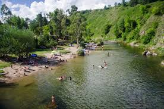
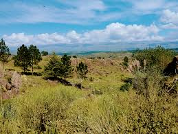
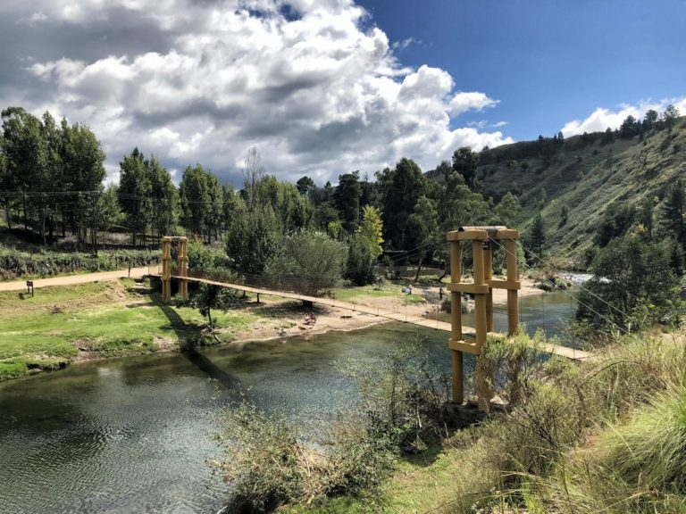
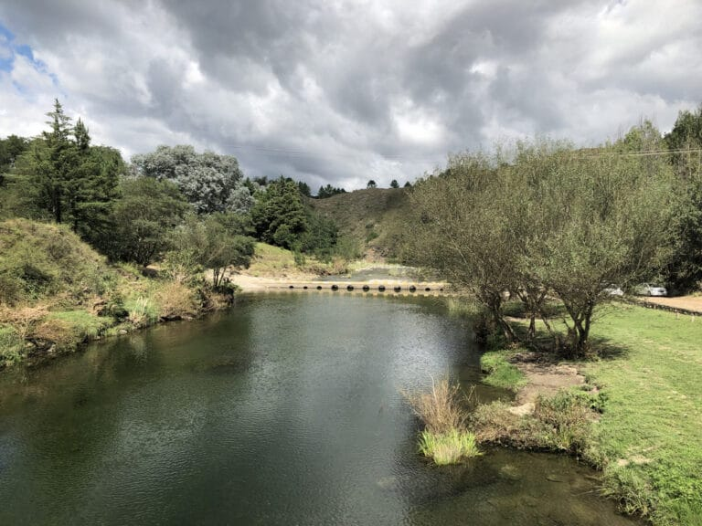
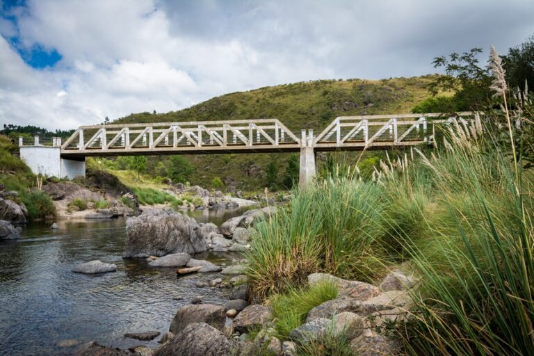
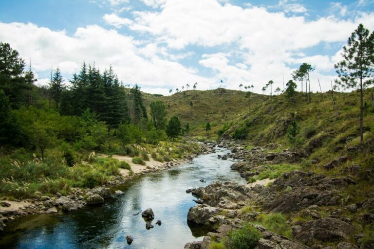
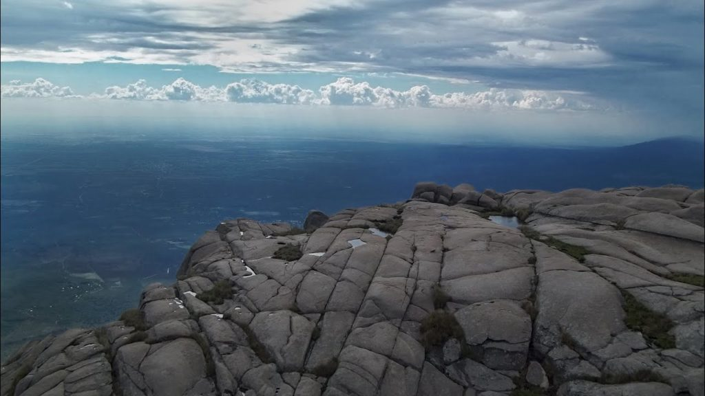
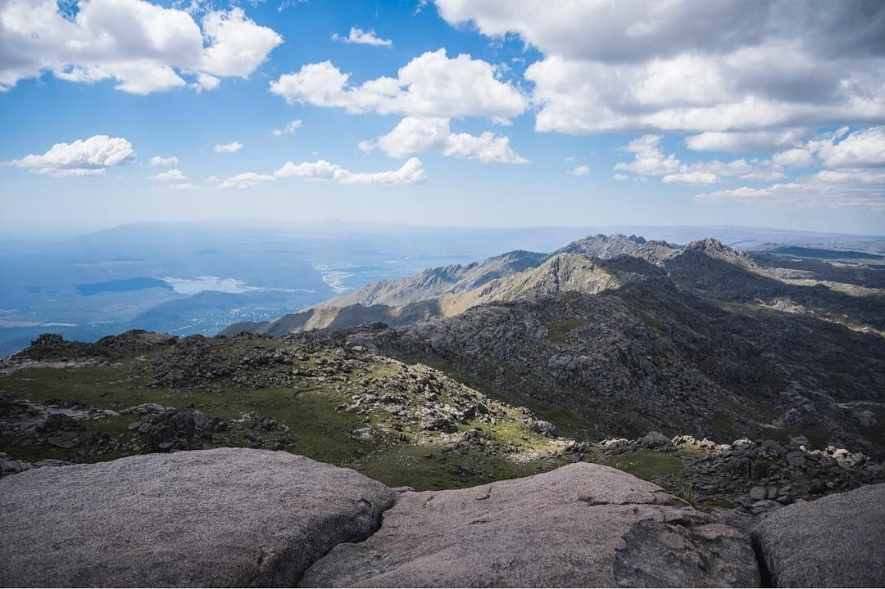
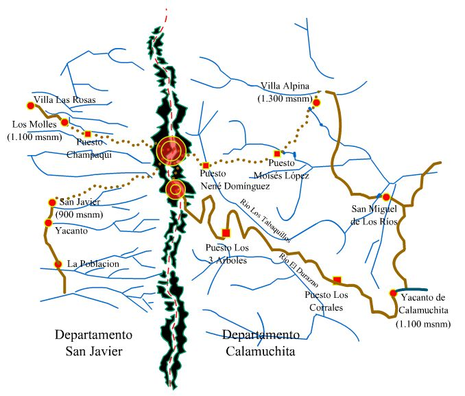

Visitar Yacanto es internarse en el lugar más pintoresco e inexplorado del valle, es mimetizarse con el paisaje, vivir la aventura, disfrutar del clima seco, atmósfera transparente, colinas de apretada vegetación, interminables bosques de confieras y de cinco ríos que bajan desde los cerros, límpidos, transparentes, oxigenados, ideales para la pesca de truchas.
Visitar Yacanto es internarse en el lugar más pintoresco e inexplorado del valle, es mimetizarse con el paisaje, vivir la aventura, disfrutar del clima seco, atmósfera transparente, colinas de apretada vegetación, interminables bosques de confieras y de cinco ríos que bajan desde los cerros, límpidos, transparentes, oxigenados, ideales para la pesca de truchas.


El Durazno
A ocho kilómetros al sur de Villa Yacanto de Calamuchita, tras descender una pequeña cuesta se llega a El Durazno. Ya el recorrido de acceso regala pinceladas de paisajes serranos para guardar. Se trata de un pequeño paraje asentado en las márgenes del río homónimo con agua pura de vertiente.
El río El Durazno despliega a su paso diversidad de formas: cascadas, saltos, ollas profundas y remansos con playas arenosas. Los Cajones, por ejemplo, es el tramo que toma al encajonarse entre dos laderas de piedras: un paseo imperdible.
Por su tranquilidad y su paisaje sereno, El Durazno es sinónimo de relax en medio de las Sierras Grandes de los Comechingones. Los pinos implantados en uno de los márgenes contrastan con la ladera vecina con vegetación autóctona y dos tipos de verdes se combinan.

Actividades
Diversas actividades ofrecen los lugareños al visitante: cabalgatas, ciclismo, excursiones en cuatriciclo o en camionetas, buceo en ollas del río, o excursiones de pesca de truchas, entre otras. Aunque pequeño, al lugar no le faltan restaurantes (en general de comida casera), una casa de té y proveedurías.

Puente Blanco
Desde Villa Yacanto partiendo hacia el norte, recorriendo 12km se encuentra este balneario enclavado sobre el Río Santa Rosa, en el camino carretero que une Villa Yacanto con el paraje de Athos Pampa, se observa flora y fauna autóctona en medio de un paisaje agreste que es perfecto para descansar en familia.

En el período estival este lugar es visitado por su fácil acceso. Además de la belleza de su paisaje, encontrará varias ollas profundas ideales para la pesca deportiva de truchas y recreación

Champaqui
Cada año, miles de personas llegan a las sierras en busca de alcanzar el techo de Córdoba. El “Champa” representa un desafío para los viajeros que se introducen al montañismo, y también para quienes desean vivir esta experiencia por única vez.
Su cumbre alcanza los 2790 msnm y es la más alta de Córdoba. Durante el camino es posible visualizar flora nativa, como los árboles de Tabaquillo y Maytén, además de arroyos prístinos, formaciones graníticas y extensos valles. Desde la cima, se puede observar: el Valle de Traslasierras (al oeste) y el Valle de Calamuchita (al este).
En general, el común de la gente usa la clásica ruta de ascenso por Villa Alpina y lo hace en 3 días, para así tener una verdadera experiencia en contacto con la montaña, durmiendo en refugios y aprovechando el tiempo para conectarse con la naturaleza.


Camino por Villa Alpina
Este sendero es el principal acceso y comienza a través de una huella dentro de un bosque de pinos. Los montañistas suelen aventurarse por 3 días, la duración ideal para disfrutar del camino. El primer día, la caminata finaliza en la base del cerro, a orillas del río Tabaquillo, siendo posible pernoctar en refugios o carpas. En la segunda jornada se hace cumbre y se regresa al campamento, emprendiendo el regreso al tercer día.
Dificultad: moderada.
Distancia del circuito: 42 km en total.
Distancia de Córdoba a Villa Alpina: 120 km.

Camino por Cerro Los Linderos
El camino que se transita en vehículo une Villa Yacanto y el Cerro Linderos. Son 42 kilómetros de ripio hasta el filo de la montaña en dirección oeste. Al llegar al cerro, se emprende una caminata de 45 minutos hasta la cima del “champa”.
Advertencias: Antes de realizar el viaje, es necesario comunicarse con bomberos de Villa Yacanto para consultar sobre el estado del terreno.
El sendero hasta la cumbre del Champaquí debe realizarse con la conciencia plena de que estamos caminando en lo más alto de las Sierras, donde el clima es muy cambiante y puede complicar la seguridad de los visitantes en cuestiones de minutos. Se debe contar con calzado adecuado, abrigo suficiente, agua y prestar mucha atención al sendero (que está poco marcado con apachetas).
Dificultad: moderado.
Distancia del circuito: 3 km.
Distancia de Córdoba a Linderos: 164 km.